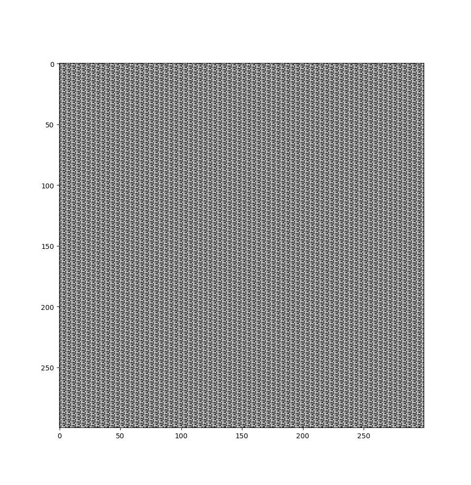
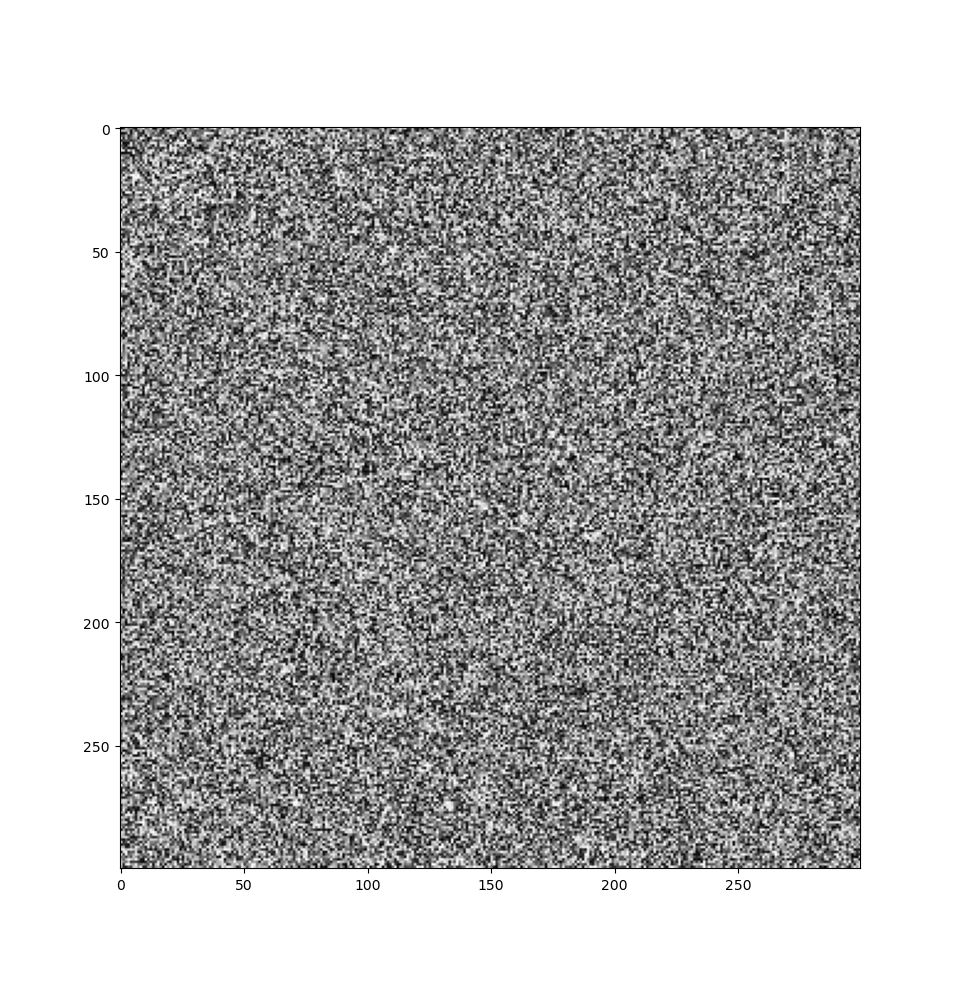

October 25, 2025
A Very Short Guide to Random Number Generators
1. Introduction
Random numbers might seem useless at first glance. But they have a variety of applications in many different areas and fields of study. Here is a short list of applications:
- Simulation: Random numbers are used to make simulations of nature more realistic. Simulations in fluid dynamics are an example of this.
- Sampling: To draw conclusions from a specific collection of objects, it is inconvenient to consider all the objects. Random samples are often used instead.
- Recreation: Rolling dice, shuffling decks of cards, spinning roulette wheels, etc.
If you're curious, you might immediately ask what is random and what we truly mean by a random sequence of numbers. Though this is a more philosophical question and better discussed elsewhere, here is a short definition of what we mean by a random sequence of numbers:
Sequence of independent numbers with a specific distribution where each number is obtained merely by chance.
In this specific guide, we are aiming to produce random numbers with a uniform distribution. In a uniform distribution, each outcome has an equal chance to appear.
Before going into the technical details, one point needs to be mentioned. The numbers that we are going to obtain will be generated by a computer. A machine that takes instructions as an input and executes them step by step to produce the desired output. This means that our outputs are deterministic in nature and cannot be random. Therefore, the sequence of numbers which we will get at the end of this procedure will not be truly random. Thus, we call them pseudo random numbers instead. And the abbreviation PRNG will be used to refer to Pseudo Random Number Generator throughout the rest of this article.
2. Properties of a Good PRNG
The definition of a good PRNG may differ from person to person, depending on their job. But all PRNGs are expected to have certain properties and pass certain tests. Here is a short list of them:
- Pass Empirical Statistical Tests: We run various statistical tests on the generated sequence of numbers to see whether it is uniformly dis- tributed between 0 and 1 or not.
- Efficiency: In real world applications such as Monte Carlo Simulations we require large samples of data. Therefore, we will be calling our program quite many times. That is the reason why we expect our PRNG to be efficient both in time and memory consumption.
Period: Each PRNG will start to produce duplicate numbers. It is because we have a finite set of possibilities as an outcome. The period of a PRNG is the length of the cycle after which it starts to repeat itself. We are usually looking for PRNGs with large period.
For context, a toy PRNG might have a period of 255, while a good PRNG should have a period of \(2^{31}-1\) or larger.
Now that we have understood what PRNGs are and what attributes we should be looking for, let us familiarize ourselves with one such generator.
3. Linear Congruential Generators
It is by far one of the most popular PRNGs because of its simplicity and efficiency. It was first introduced by D. H. Lehmer in 1949. In order to implement this generator, we need four magic numbers: \(m\) the modulus, \(a\) the multiplier, \(c\) the increment, \(X_0\) the seed. To produce the desired sequence we do as follows:
\[ X_{n+1} = (aX_n + c) \bmod m \]
One question immediately arises: How do you choose the best values for \(m\), \(a\) and \(c\)? There are so many theoretical bases involved in choosing these magic numbers, which we will not discuss here. Instead, we will use the following values:
\[ a = 16807, \quad c = 0, \quad m = 2^{31} - 1 \]
By doing so we will get a cycle of length \(m\) which is useful for our purposes. Now let us implement this generator using Python and check out the results.
4. Implementation
It is really easy to implement this generator using a high level programming language like Python. Here is the final code.
4.1. Example 1: Inefficient values (short period)
First, let's try with inefficient values to see the pattern:
from matplotlib import pyplot as plt seed = 1 a = 126 # Inefficient value c = 0 m = 255 # Inefficient value def lcg(): global seed seed = (a*seed + c) % m random_number = seed / m return random_number def random_seq(n): seq = [] for i in range(n): seq.append(lcg()) return seq random_image = [random_seq(300) for i in range(300)] plt.imshow(random_image, cmap='gray') plt.show()
As you can see, these values for \(a\) and \(m\) are inefficient. Thus, we will get a cycle with a short period. You can see this in the bit mask image below.

You can see the numbers start repeating after a certain number of iterations.
4.2. Example 2: Recommended values (long period)
Now let us set the recommended values for the variables mentioned above:
seed = 1 a = 16807 c = 0 m = 2**31 - 1 # Rest of the code remains the same def lcg(): global seed seed = (a*seed + c) % m random_number = seed / m return random_number def random_seq(n): seq = [] for i in range(n): seq.append(lcg()) return seq random_image = [random_seq(300) for i in range(300)] plt.imshow(random_image, cmap='gray') plt.show()
This is the result we get:

5. Final Remarks
In this article, we introduced PRNGs and discussed the applications of random numbers. We implemented a Linear Congruential Generator, one of the simplest PRNGs, to demonstrate the core concepts.
It is worth noting that:
- "Good" random numbers depend on your application's needs
- The generated sequences should be tested using statistical tests (check out the Diehard tests) to verify quality
- LCGs are excellent for learning but have limitations for cryptographic or high-stakes applications
For production use, consider more robust algorithms like Mersenne Twister
(Python's default random module) or cryptographic PRNGs for security-sensitive
applications.
5.1. Looking Back (October 2025)
Reading this article almost two years later, here's what I'd approach differently:
- I'd add more interactive visualizations
- I'd discuss the spectral test for LCG quality
- I'd compare LCG to modern alternatives earlier
- I'd expand on cryptographic vs. statistical randomness
But the core concepts hold up. If you're learning about PRNGs for the first time, this is still a solid starting point.
This article was written in March 2024 as a self-study project while learning about random number generation. I've kept it mostly as-written to preserve my learning journey, with minor edits for clarity.
6. Further Reading
The resources mentioned here are worth checking out and have helped me to write this article:
- Knuth, Donald, The Art of Computer Programming, Volume 2: Seminumerical Algorithms
- Stephen K. Park and Keith W. Miller, Random Number Generators: Good Ones Are Hard to Find, Communications of the ACM (Vol. 31, Num. 10), 1988
- Coding Math: Episode 51 - Pseudo Random Number Generators
- Linear Congruential Generator (Wikipedia)